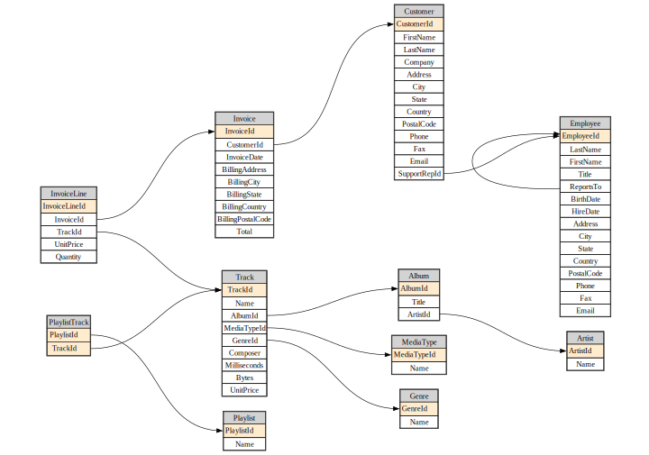

from IPython.display import MarkdownSource
Source code for fastlite
Metadata
db = Database("chinook.sqlite")Database.t
Database.t ()
Exported source
class _Getter:
"Abstract class with dynamic attributes providing access to DB objects"
def __init__(self, db): self.db = db
# NB: Define `__dir__` in subclass to get list of objects
def __repr__(self): return ", ".join(dir(self))
def __contains__(self, s): return (s if isinstance(s,str) else s.name) in dir(self)
def __getitem__(self, idxs):
if isinstance(idxs,str): return self.db.table(idxs)
return [self.db.table(o) for o in idxs]
def __getattr__(self, k):
if k[0]=='_': raise AttributeError
return self.db[k]
class _TablesGetter(_Getter):
def __dir__(self): return self.db.table_names()
@patch(as_prop=True)
def t(self:Database): return _TablesGetter(self)By returning a _TablesGetter we get a repr and auto-complete that shows all tables in the DB.
dt = db.t
dtAlbum, Artist, Customer, Employee, Genre, Invoice, InvoiceLine, MediaType, Playlist, PlaylistTrack, Trackartist = dt.Artist
artist<Table Artist (ArtistId, Name)>This also can be used to get multiple tables at once.
dt['Album','Artist'][<Table Album (AlbumId, Title, ArtistId)>, <Table Artist (ArtistId, Name)>]assert 'Artist' in dt
assert artist in dt
assert 'foo' not in dtView.c
View.c ()
Exported source
class _Col:
def __init__(self, t, c): self.t,self.c = t,c
def __str__(self): return f'"{self.t}"."{self.c}"'
def __repr__(self): return self.c
def __iter__(self): return iter(self.c)
class _ColsGetter:
def __init__(self, tbl): self.tbl = tbl
def __dir__(self): return map(repr, self())
def __call__(self): return [_Col(self.tbl.name,o.name) for o in self.tbl.columns]
def __contains__(self, s): return (s if isinstance(s,str) else s.c) in self.tbl.columns_dict
def __repr__(self): return ", ".join(dir(self))
def __getattr__(self, k):
if k[0]=='_': raise AttributeError
return _Col(self.tbl.name, k)
@patch(as_prop=True)
def c(self:Table): return _ColsGetter(self)
@patch(as_prop=True)
def c(self:View): return _ColsGetter(self)Table.c
Table.c ()
Column auto-complete and repr are much the same as tables.
ac = artist.c
acArtistId, NameColumns stringify in a format suitable for including in SQL statements.
print(f"select {ac.Name} ...")select "Artist"."Name" ...View.__str__
View.__str__ ()
Return str(self).
Exported source
@patch
def __str__(self:Table): return f'"{self.name}"'
@patch
def __str__(self:View): return f'"{self.name}"'Table.__str__
Table.__str__ ()
Return str(self).
Tables and views do the same.
print(f"select {ac.Name} from {artist}")select "Artist"."Name" from "Artist"assert 'Name' in ac
assert ac.Name in ac
assert 'foo' not in acQueries and views
Database.q
Database.q (sql:str, params=None)
Exported source
@patch
def q(self:Database, sql: str, params = None)->list:
return list(self.query(sql, params=params))This is a minor shortcut for interactive use.
acdc = db.q(f"select * from {artist} where {ac.Name} like 'AC/%'")
acdc[{'ArtistId': 1, 'Name': 'AC/DC'}]Exported source
def _get_flds(tbl):
return [(k, v|None, field(default=tbl.default_values.get(k,None)))
for k,v in tbl.columns_dict.items()]
def _dataclass(self:Table, store=True, suf='')->type:
"Create a `dataclass` with the types and defaults of this table"
res = make_dataclass(self.name.title()+suf, _get_flds(self))
if store: self.cls = res
return res
Table.dataclass = _dataclassartist_dc = artist.dataclass()
art1_obj = artist_dc(**acdc[0])
art1_objArtist(ArtistId=1, Name='AC/DC')You can get the definition of the dataclass using fastcore’s dataclass_src:
src = dataclass_src(artist_dc)
hl_md(src, 'python')@dataclass
class Artist:
ArtistId: int | None = None
Name: str | None = Noneall_dcs
all_dcs (db, with_views=False, store=True, suf='')
dataclasses for all objects in db
Exported source
def all_dcs(db, with_views=False, store=True, suf=''):
"dataclasses for all objects in `db`"
return [o.dataclass(store=store, suf=suf) for o in db.tables + (db.views if with_views else [])]create_mod
create_mod (db, mod_fn, with_views=False, store=True, suf='')
Create module for dataclasses for db
Exported source
def create_mod(db, mod_fn, with_views=False, store=True, suf=''):
"Create module for dataclasses for `db`"
mod_fn = str(mod_fn)
if not mod_fn.endswith('.py'): mod_fn+='.py'
with open(mod_fn, 'w') as f:
print('from dataclasses import dataclass', file=f)
print('from typing import Any,Union,Optional\n', file=f)
for o in all_dcs(db, with_views, store=store, suf=suf): print(dataclass_src(o), file=f)create_mod(db, 'db_dc')from db_dc import Track
Track(**dt.Track.get(1))Track(TrackId=1, Name='For Those About To Rock (We Salute You)', AlbumId=1, MediaTypeId=1, GenreId=1, Composer='Angus Young, Malcolm Young, Brian Johnson', Milliseconds=343719, Bytes=11170334, UnitPrice=0.99)call’]
*Built-in mutable sequence.
If no argument is given, the constructor creates a new empty list. The argument must be an iterable if specified.*
Exported source
@patch
def __call__(
self:(Table|View), where:str|None=None,
where_args: Iterable|dict|NoneType=None, with_pk:bool=False, order_by: str|None=None,
limit:int|None=None, offset:int|None=None, as_cls:bool=True, **kwargs)->list:
"Shortcut for `rows_where` or `pks_and_rows_where`, depending on `with_pk`"
f = getattr(self, 'pks_and_rows_where' if with_pk else 'rows_where')
xtra = getattr(self, 'xtra_id', {})
if xtra:
xw = ' and '.join(f"[{k}] = {v!r}" for k,v in xtra.items())
where = f'{xw} and {where}' if where else xw
res = f(where=where, where_args=where_args, order_by=order_by, limit=limit, offset=offset, **kwargs)
if as_cls and hasattr(self,'cls'):
if with_pk: res = ((k,self.cls(**v)) for k,v in res)
else: res = (self.cls(**o) for o in res)
return list(res)This calls either rows_where (if with_pk) or with_pk (otherwise). If dataclass(store=True) has been called, then if as_cls rows will be returned as dataclass objects.
artist(limit=2)[Artist(ArtistId=1, Name='AC/DC'), Artist(ArtistId=2, Name='Accept')]If with_pk then tuples are returns with PKs 1st.
artist(with_pk=True, limit=2)[(1, Artist(ArtistId=1, Name='AC/DC')), (2, Artist(ArtistId=2, Name='Accept'))]artist.get(1){'ArtistId': 1, 'Name': 'AC/DC'}album = dt.Album
acca_sql = f"""select {album}.*
from {album} join {artist} using (ArtistId)
where {ac.Name} like 'AC/%'"""hl_md(acca_sql, 'sql')select "Album".*
from "Album" join "Artist" using (ArtistId)
where "Artist"."Name" like 'AC/%'db.q(acca_sql)[{'AlbumId': 1,
'Title': 'For Those About To Rock We Salute You',
'ArtistId': 1},
{'AlbumId': 4, 'Title': 'Let There Be Rock', 'ArtistId': 1}]db.create_view("AccaDaccaAlbums", acca_sql, replace=True)<Database <sqlite3.Connection object>>Database.v
Database.v ()
Exported source
class _ViewsGetter(_Getter):
def __dir__(self): return self.db.view_names()
@patch(as_prop=True)
def v(self:Database): return _ViewsGetter(self)dv = db.v
dvAccaDaccaAlbumsdv.AccaDaccaAlbums()[{'AlbumId': 1,
'Title': 'For Those About To Rock We Salute You',
'ArtistId': 1},
{'AlbumId': 4, 'Title': 'Let There Be Rock', 'ArtistId': 1}]Database.create
Database.create (cls=None, name=None, pk='id', foreign_keys=None, defaults=None, column_order=None, not_null=None, hash_id=None, hash_id_columns=None, extracts=None, if_not_exists=False, replace=False, ignore=True, transform=False, strict=False)
Create table from cls, default name to snake-case version of class name
| Type | Default | Details | |
|---|---|---|---|
| cls | NoneType | None | Dataclass to create table from |
| name | NoneType | None | Name of table to create |
| pk | str | id | Column(s) to use as a primary key |
| foreign_keys | NoneType | None | Foreign key definitions |
| defaults | NoneType | None | Database table defaults |
| column_order | NoneType | None | Which columns should come first |
| not_null | NoneType | None | Columns that should be created as NOT NULL |
| hash_id | NoneType | None | Column to be used as a primary key using hash |
| hash_id_columns | NoneType | None | Columns used when calculating hash |
| extracts | NoneType | None | Columns to be extracted during inserts |
| if_not_exists | bool | False | Use CREATE TABLE IF NOT EXISTS |
| replace | bool | False | Drop and replace table if it already exists |
| ignore | bool | True | Silently do nothing if table already exists |
| transform | bool | False | If table exists transform it to fit schema |
| strict | bool | False | Apply STRICT mode to table |
Exported source
@patch
def create(
self: Database,
cls=None, # Dataclass to create table from
name=None, # Name of table to create
pk='id', # Column(s) to use as a primary key
foreign_keys=None, # Foreign key definitions
defaults=None, # Database table defaults
column_order=None, # Which columns should come first
not_null=None, # Columns that should be created as ``NOT NULL``
hash_id=None, # Column to be used as a primary key using hash
hash_id_columns=None, # Columns used when calculating hash
extracts=None, # Columns to be extracted during inserts
if_not_exists=False, # Use `CREATE TABLE IF NOT EXISTS`
replace=False, # Drop and replace table if it already exists
ignore=True, # Silently do nothing if table already exists
transform=False, # If table exists transform it to fit schema
strict=False, # Apply STRICT mode to table
):
"Create table from `cls`, default name to snake-case version of class name"
mk_dataclass(cls)
if name is None: name = camel2snake(cls.__name__)
typs = {o.name: o.type for o in fields(cls)}
res = self.create_table(
name, typs, defaults=defaults,
pk=pk, foreign_keys=foreign_keys, column_order=column_order, not_null=not_null,
hash_id=hash_id, hash_id_columns=hash_id_columns, extracts=extracts, transform=transform,
if_not_exists=if_not_exists, replace=replace, ignore=ignore, strict=strict)
res.cls = cls
return resThe class you pass to create is converted to a dataclass where any fields missing a default are defaulted to None.
class Cat: id: int; name: str; age: int; city: str = "Unknown"
cats = db.create(Cat)
Cat(1)Cat(id=1, name=None, age=None, city='Unknown')print(cats.schema)CREATE TABLE [cat] (
[id] INTEGER PRIMARY KEY,
[name] TEXT,
[age] INTEGER,
[city] TEXT
)db.t.cat.drop()Database diagrams
(Requires graphviz.)
fk = album.foreign_keys[0]
fkForeignKey(table='Album', column='ArtistId', other_table='Artist', other_column='ArtistId')diagram
diagram (tbls, ratio=0.7, size='10', neato=False, render=True)
Exported source
def _edge(tbl):
return "\n".join(f"{fk.table}:{fk.column} -> {fk.other_table}:{fk.other_column};"
for fk in tbl.foreign_keys)
def _row(col):
xtra = " 🔑" if col.is_pk else ""
bg = ' bgcolor="#ffebcd"' if col.is_pk else ""
return f' <tr><td port="{col.name}"{bg}>{col.name}{xtra}</td></tr>'
def _tnode(tbl):
rows = "\n".join(_row(o) for o in tbl.columns)
res = f"""<table cellborder="1" cellspacing="0">
<tr><td bgcolor="lightgray">{tbl.name}</td></tr>
{rows}
</table>"""
return f"{tbl.name} [label=<{res}>];\n"Exported source
def diagram(tbls, ratio=0.7, size="10", neato=False, render=True):
layout = "\nlayout=neato;\noverlap=prism;\noverlap_scaling=0.5;""" if neato else ""
edges = "\n".join(map(_edge, tbls))
tnodes = "\n".join(map(_tnode, tbls))
res = f"""digraph G {{
rankdir=LR;{layout}
size="{size}";
ratio={ratio};
node [shape=plaintext]
{tnodes}
{edges}
}}
"""
return Source(res) if render else resdiagram(db.tables)